主题与状态实图
推荐未采用方向的覆盖检查。均为Figma原生导出，页面数值为测试示例；静态图不证明WEAPP手势、地图provider或手机运行通过。200%文字按当前项目合同暂停，320宽使用标准字号长中文。
地图 © OpenStreetMap贡献者；实景为 Charlie fong / 2021，CC BY-SA 4.0，画板内裁切使用。不是当前开放状态证明。
map · medium · day · 390×844
原图 · 实际节点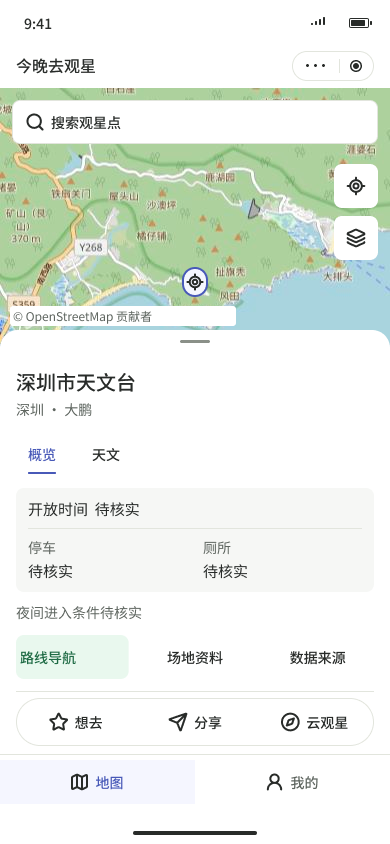
my · normal · day · 390×844
原图 · 实际节点 map · medium · night · 390×844
map · medium · night · 390×844
原图 · 实际节点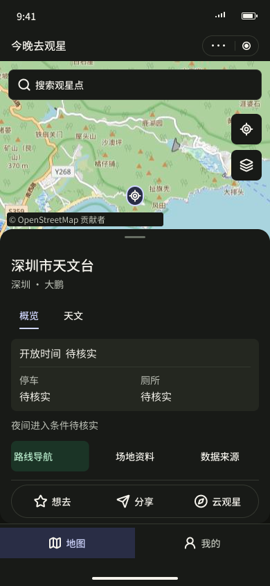
my · normal · night · 390×844
原图 · 实际节点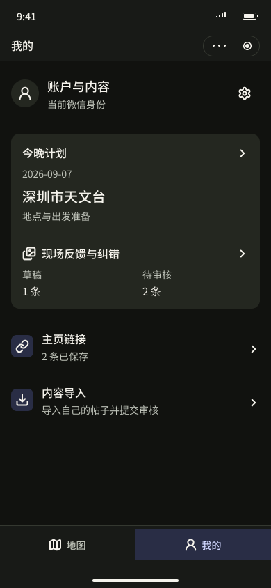
map · medium · observation · 390×844
原图 · 实际节点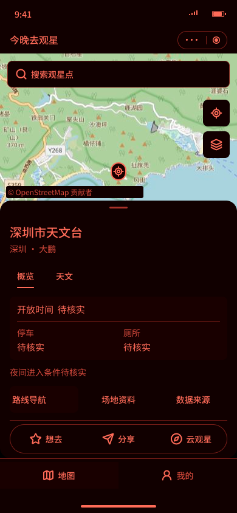
my · normal · observation · 390×844
原图 · 实际节点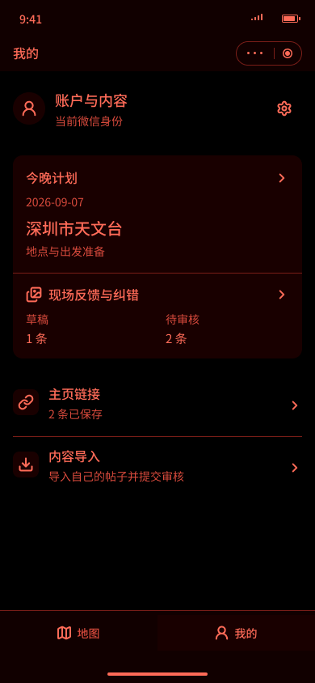
map · small · day · 390×844
原图 · 实际节点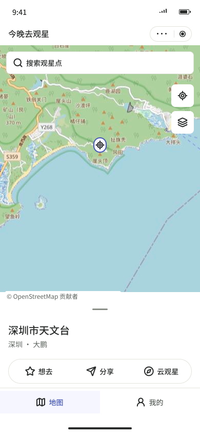
map · large-no-photo · day · 390×844
原图 · 实际节点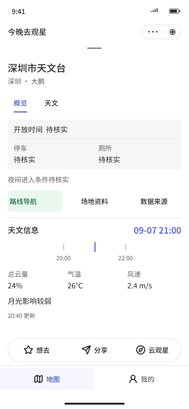
map · large-photo · day · 390×844
原图 · 实际节点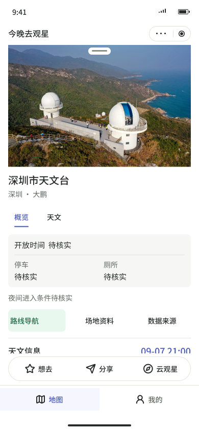
map · layers · day · 390×844
原图 · 实际节点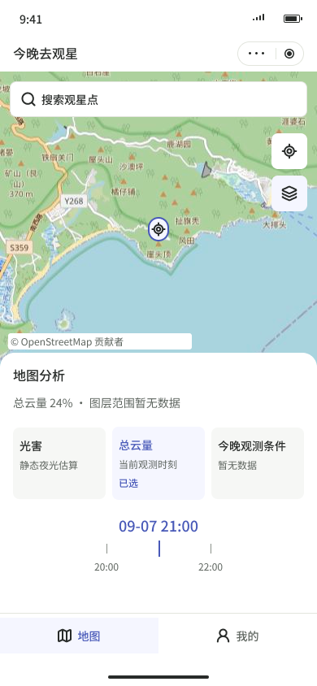
map · partial-stale-risk · day · 390×844
原图 · 实际节点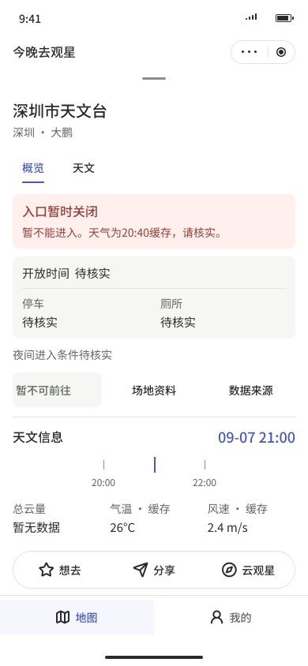
my · empty · day · 390×844
原图 · 实际节点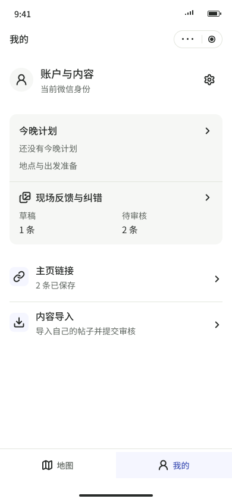
my · loading · day · 390×844
原图 · 实际节点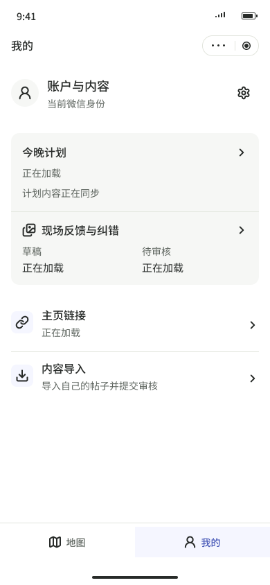
my · offline · day · 390×844
原图 · 实际节点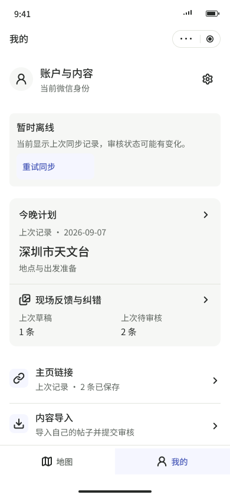
my · identity-recovery · day · 390×844
原图 · 实际节点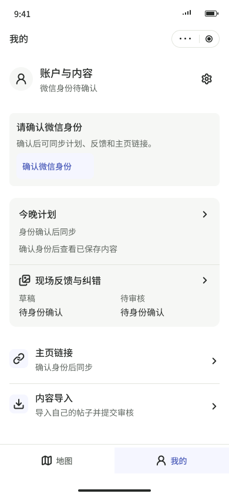
map · long-text · day · 320×844
原图 · 实际节点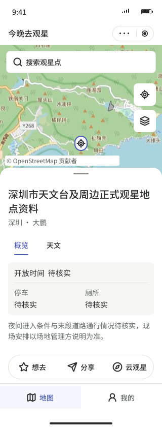
my · long-text · day · 320×844
原图 · 实际节点map · medium · day · 375×844
原图 · 实际节点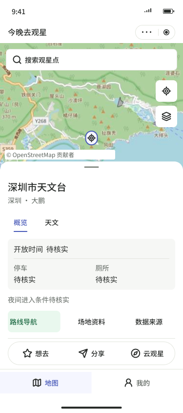
my · normal · day · 375×844
原图 · 实际节点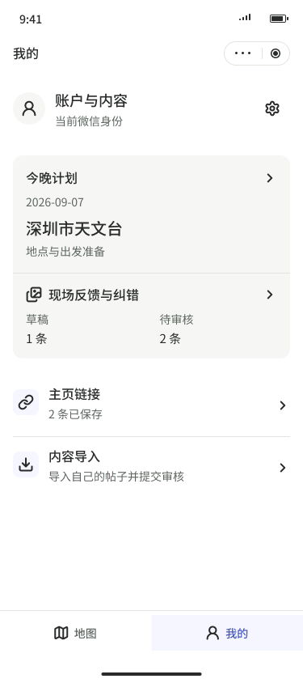
map · medium · day · 430×844
原图 · 实际节点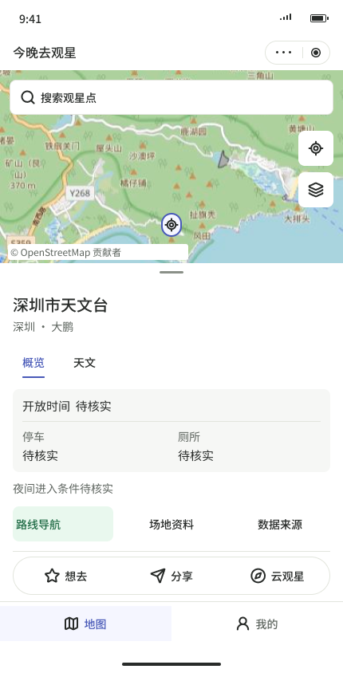
my · normal · day · 430×844
原图 · 实际节点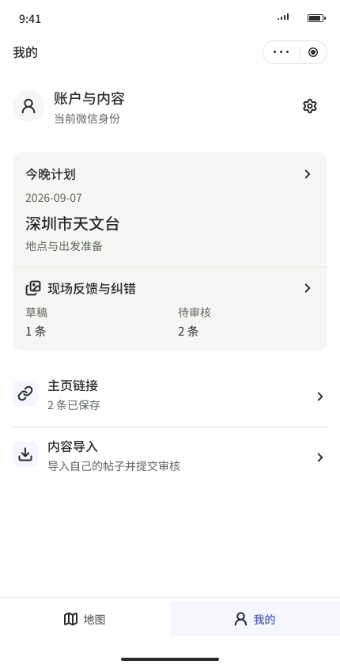
components · component-states · day · 390×844
原图 · 实际节点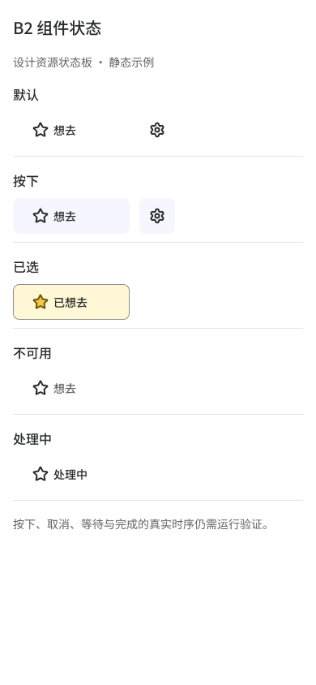
components · component-states · night · 390×844
原图 · 实际节点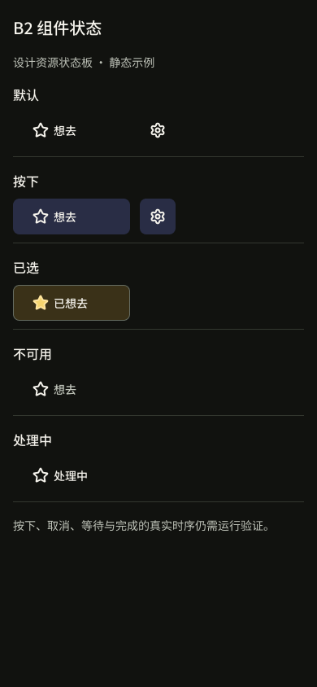
components · component-states · observation · 390×844
原图 · 实际节点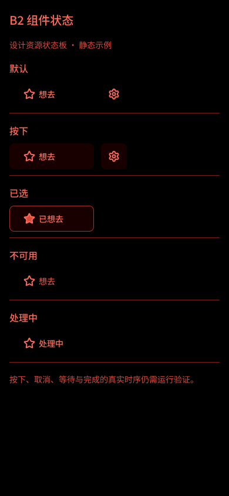
{kind=link}